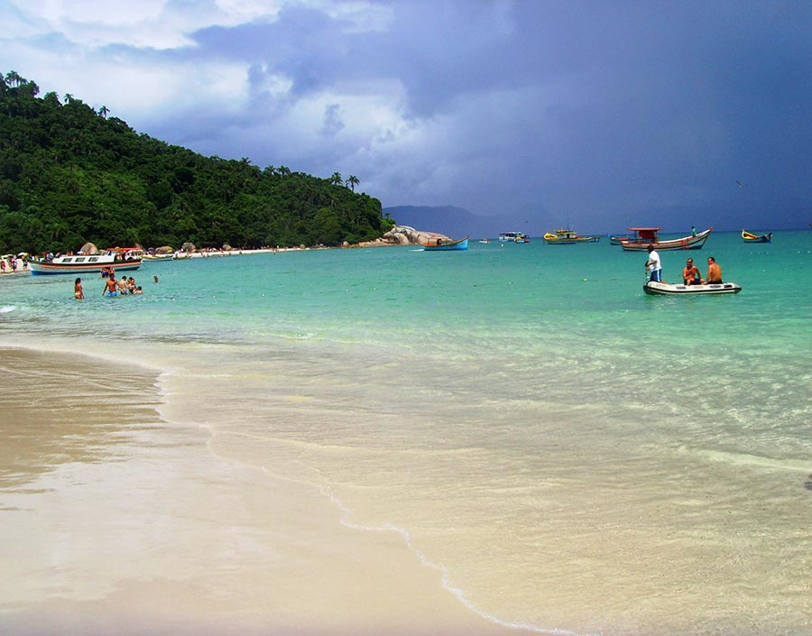
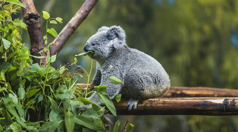

MEUS PONTOS TURÍSTICOS
Vim nesse site mostrar alguns pontos turísticos que eu já fui ou que eu gostaria de ir, incluindo algumas recomendações e ítens necessários e seus preços.
Florianópolis/SC
Ponte Hercílio Luz
A ponte Hercílio Luz é um dos principais pontos turísticos de Florianópolis. Foi fechada em 1982 e reaberta em 2019
Jurerê Internacional
Jurerê Internacional é conhecida por ser um polo cultural, já querecebe vários eventos ao longo do ano. A maioria deles tem como palco o Jurerê Open Shopping, onde o acesso do público é livre e gratuito.
Praia Campeche
São 11,5 quilômetros de ponta a ponta de praia (envolvendo as duas praias vizinhas), com faixa de areia branca, fina e larga. O mar do Campeche é grosso, com águas frias e de salinidade geralmente elevada.
Porto Alegre/RS
Centro Histórico de Porto Alegre
A graça por ali é andar e observar o local. Os pontos turísticos da região ficam todos perto e dá para fazer os passeios a pé, porém é preciso se organizar para não andar além do necessário.
Praça da Matriz

A Praça Marechal Deodoro, popularmente conhecida como Praça da Matriz, é um espaço público e histórico muito conhecido em Porto Alegre. Nela ocorrem eventos importantes da história da cidade. A praça tem sido o point para manifestações religiosas, artísticas e passeatas.
Arena Grêmio e Beira Rio
Os estádio dos dois times gaúchos. Arena Grêmio onde o time Grêmio FBPA manda seus jogos e o Estádio Beira-Rio onde o time SC Internacional joga.
Holanda
Amsterdã
Além de ser uma cidade muito liberal, quem mora lá diz que tem uma boa qualidade de vida. Além dos passeios de barcos e lagos famosos, é também conhecida como cidade do Van Gogh e Anne Frank.
Roterdã
A cidade é marcada por uma arquitetura inovadora, existem diversos monumentos, edifícios antigos e um famoso canal. É a segunda maior cidade da Holanda.
Utrecht
Utrecht é uma cidade medieval com raízes profundas na época do Império Romano. O cidade é conhecida pelos diversos museus.
Miami
Ultra Music Festival
Criado em 1999, o UMF é considerado por muitos como o melhor evento de música eletrônica. São 3 dias seguidos de música. a previsão de reabertura é de 2022.
Wynwood Walls

Situado no coração do Wynwood Arts District, uma das cenas de arte mais conhecida dos Estados Unidos, Wynwood Walls eleva o nível em sua vitrine de grafiteiros de rua em um cenário urbano ao ar livre.
Vizcaya Museum and Gardens
Além de belos jardins, também há um museu muito conhecido e visitado. Pessoas vão principalmente para tirar fotos.
Australia
Sydney Opera House

O distrito comercial central de Sydney é cheio de energia. Figurões entram e saem dos arranha-céus e dos bares de bebidas após o trabalho, compradores sofisticados passeiam por avenidas como a QVB enquanto os amantes da culinária refinada frequentam muitos restaurantes de chefs famosos.
Jardim Botânico Real de Melbourne
Jardim botânico popular com layout verdadeiramente impressionante e incrível variedade de espécies. Você pode passear pelos caminhos para fora ou visitar o Tropical Glasshouse e explorar a flora colorida de regiões tropicais em todo o mundo.
Lone Pine Koala Sanctuary
Australia é conhecido principalmente por seus animais exóticos que só existem lá, como principais atrações nesse zoológico, temos o coala e o canguru.